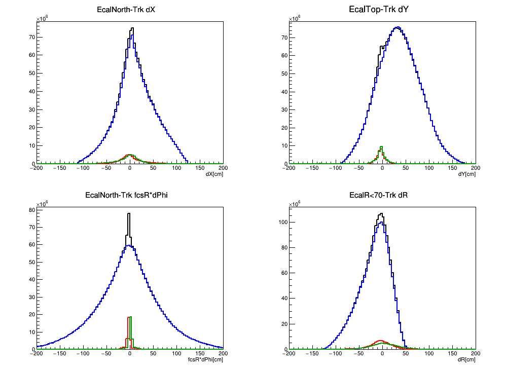
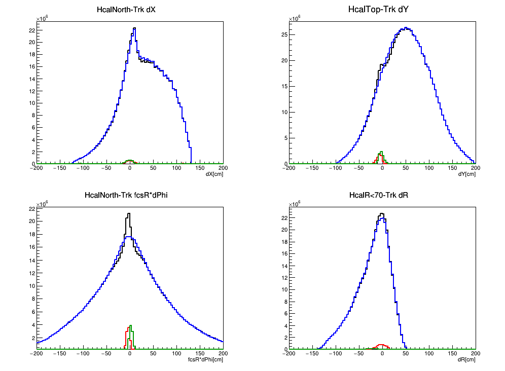
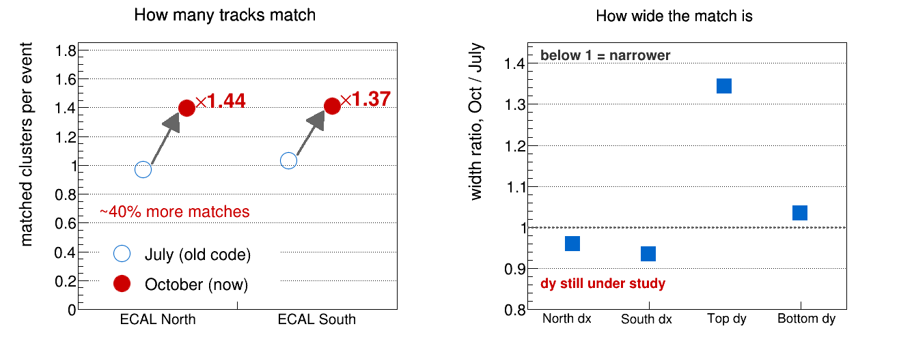
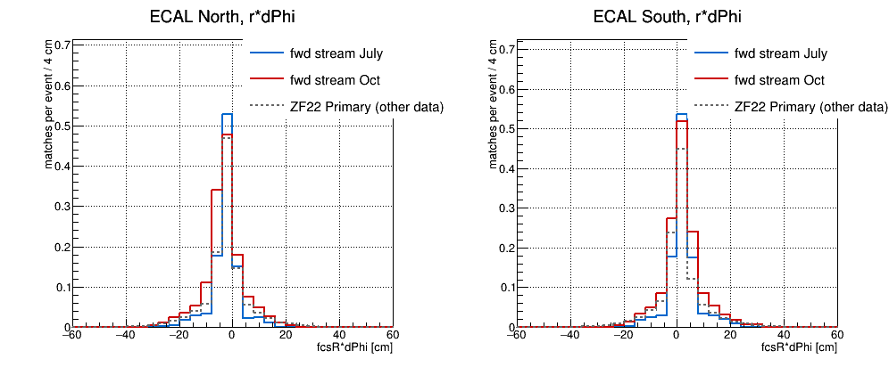
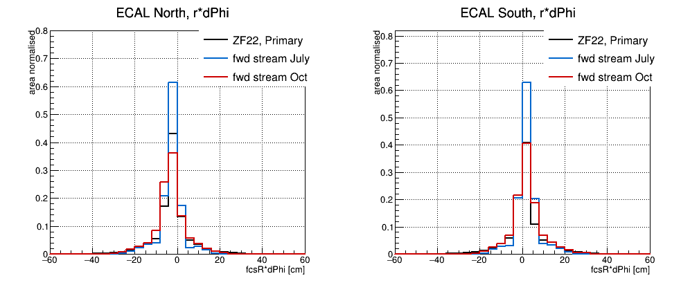

Oct, with all fixes


from July




STAR forward upgrade, FST/sTGC geometry and alignment — Alignment program | Geometry and mapping | Tracking performance | FCS track matching
Same panels, same ranges and the same 4 cm binning as the 2026-07-06 page, so the plots overlay one for one. Current code throughout, with the best configuration for each dataset and the best track type each one can offer. The step by step reconciliation against 2026-07-06 is in tracking section 13. Each dataset also has its own page in the original layout: ZF 22 and forward stream.
| dataset | track type | configuration |
|---|---|---|
| ZF 22 — Run 22 zero field, low luminosity | Primary (TPC vertex) | GEOFIX 1,0,0, iteration-2 sTGC tables, FTT hits on the track, per-run FTT time anchors |
| Forward stream — Run 22 day 081, field on, high luminosity | BLCVtx (no TPC vertex for most events) | GEOFIX 1,0,0, real magnetic field, FTT hits on the track, per-run FTT time anchors |
In every panel: black = same event, blue = mixed event, red and green = same−mixed for the two halves. No legend is drawn on the plots because it covered the peaks.
| dataset | Ecal | Hcal |
| ZF 22, Primary | |
|
| Forward stream, BLCVtx Oct, with all fixes |
|
|
| Forward stream, BLCVtx from July |
 |
 |
|
 |
The same 74 forward-stream files, processed with the old code (July) and the current code (October). The current chain matches about 40% more clusters per event — 1.44× north and 1.37× south — while the residual width is slightly narrower in dx and wider in dy. A width-only comparison misses the gain entirely, which is why the yield is shown first.
Track types differ between the two panels: the rate is measured on BLCVtx, which is what the forward stream can offer, and the width ratios come from the Primary-track reconciliation in tracking section 13. The dy term is the open item there.
The two forward-stream passes use exactly the same 74 input files. July ran them uncapped (674 938 events), October at 5000 per file (348 984), so October is the first part of each of the same files. Normalising per event rather than per area therefore keeps the yield, which is what an area-normalised plot throws away. ZF 22 is different data and a different track type, so its rate is drawn dashed for scale only, not for comparison.
|
 |
| half | July, matches/event | Oct, matches/event | Oct / July |
|---|---|---|---|
| North | 0.97293 | 1.39733 | 1.436 |
| South | 1.03253 | 1.41206 | 1.368 |
Integrated over |fcsR*dPhi|<30 cm, ECAL, mixed-event subtracted. Both inputs are current picoMatch output on a common 4 cm axis; the July one is the old production's picoDsts re-analysed, so the tracking code differs between the two and the analysis does not.
The current chain finds about 40% more matched clusters per event — 1.44× north and 1.37× south — on the same input files. An area-normalised plot cannot show this, which is why the yield is quoted here. Taken with the widths, the picture is that the current code matches noticeably more tracks at a slightly worse resolution rather than simply being worse.
The same distributions normalised by area instead, which compares shape alone. ECAL only, mixed-event subtracted, common 4 cm axis, north left and south right.
|
 |
| half | ZF 22, Primary | fwd stream July | fwd stream Oct |
|---|---|---|---|
| North mean | −2.31 | −3.08 | −3.25 |
| South mean | +1.25 | +2.66 | +2.44 |
| antisymmetric part | −1.78 | −2.87 | −2.85 |
cm, over |d|<30 cm. North and south are displaced in opposite directions in all three datasets, by about 2–3 cm. That antisymmetry is the signature of a relative y offset between the FCS clusters and the track projections, not of a rotation: north sits near φ=0 where the azimuthal direction is +y, south near φ=π where it is −y, so a common y shift appears with opposite sign in the two halves. A rotation about z would shift both the same way.
It is present in July as well as October and in zero field as well as the forward stream, so it is a standing offset rather than anything introduced by the recent code work — and it is the same size in both forward-stream passes. Worth fixing: it is a single number.
| coordinate | ZF 22, Primary | forward stream, BLCVtx | ||
|---|---|---|---|---|
| RMS [cm] | S/B | RMS [cm] | S/B | |
| dX | 9.08 / 9.56 | 0.41 / 0.45 | 11.46 / 11.92 | 0.077 / 0.078 |
| dY | 8.80 / 8.39 | 0.51 / 0.50 | 9.76 / 8.16 | 0.095 / 0.092 |
| fcsR*dPhi | 7.73 / 7.72 | 0.47 / 0.51 | 7.14 / 6.80 | 0.091 / 0.093 |
| dR | 10.50 / 11.22 | 0.39 / 1.11 | 13.94 / 14.38 | 0.094 / 0.229 |
Mixed event normalised to same over |d| = 80–160 cm and subtracted; RMS over |d|<30 cm; S/B counted inside |d|<15 cm. Two numbers per cell are the two halves (North/South, Top/Bottom, R<70/R>70).
| dataset | dX | dY | fcsR*dPhi | dR |
| ZF 22, Ecal |  |
 |
 |
 |
| Forward stream, Ecal |  |
 |
 |
 |
| ZF 22, Hcal |  |
 |
 |
 |
| Forward stream, Hcal |  |
 |
 |
 |